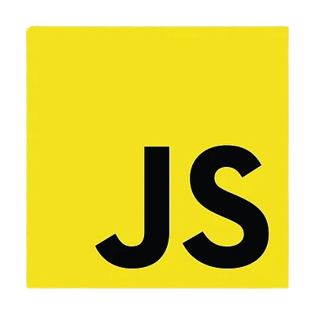
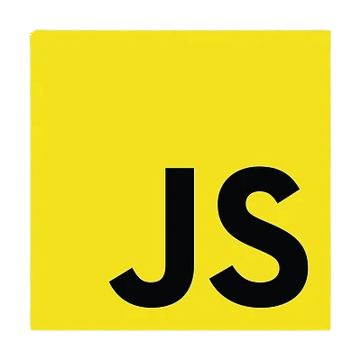
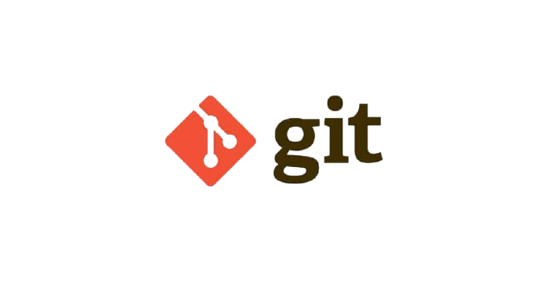
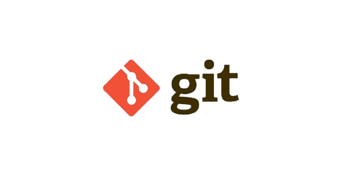
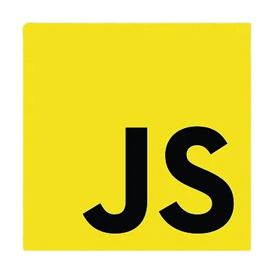
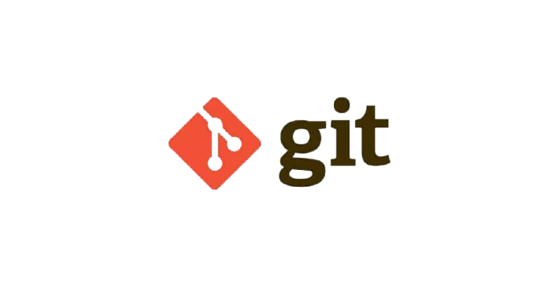

Technologies utilisées
 



 

Etudiant en BTS SIO option SLAM .
Passionné par le développement
web et logiciel, je développe mes compétences
à travers des
projets concrets.Ce portfolio présente mes compétences, mon parcours et
mes réalisations.


Un projet réalisé dans le cadre de mon BTS SIO, mettant en œuvre la gestion de versions avec Git pour le suivi des modifications et la collaboration.
En savoir plusUn projet réalisé dans le cadre de mon BTS SIO, simulant une plateforme de système de gestion de location de planches de surf.
En savoir plus Lien vers le site web